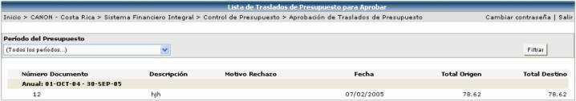
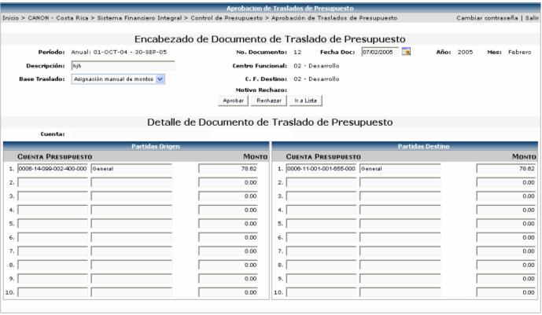

En esta opción se muestra los registros que generan los documentos de traslados que han sido enviados a aprobar. Aquí solo podrá ver la información el usuario que es aprobador de traslados (según lo que se definió en la seguridad):

Al seleccionar el registro que se desea Aprobar o Rechazar, se presenta la siguiente pantalla con la información del documento de reserva. Lo que prosigue es presionar el botón de o según corresponda:

Si se rechaza el traslado, manda un correo al usuario que registró el documento de traslado, indicándole que se rechazo dicho documento. Si se aprueba, se manda un correo al usuario que registro el documento y un correo al responsable el centro funcional destino. Si se diera el caso de que no existen usuarios definidos que aprueben traslados, en el centro funcional destino, se le enviará el correo que debió ser enviado al Usuario Aprobador del Centro Funcional Destino, al usuario que registró el documento indicando la situación, con una nota al inicio del correo, indicando que no existe en el Centro Funcional Destino ningún usuario registrado a quien notificarle el Traslado.